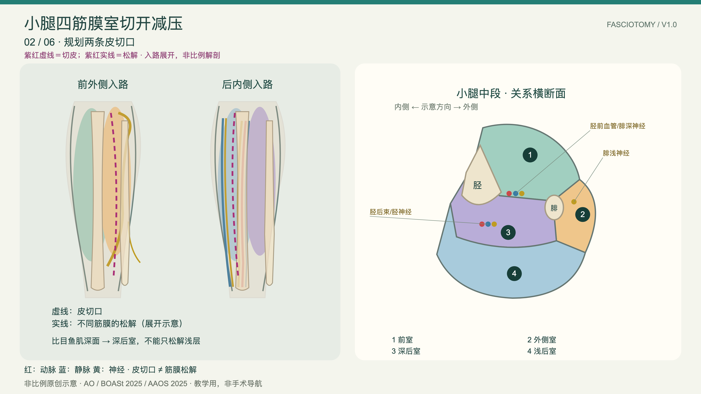
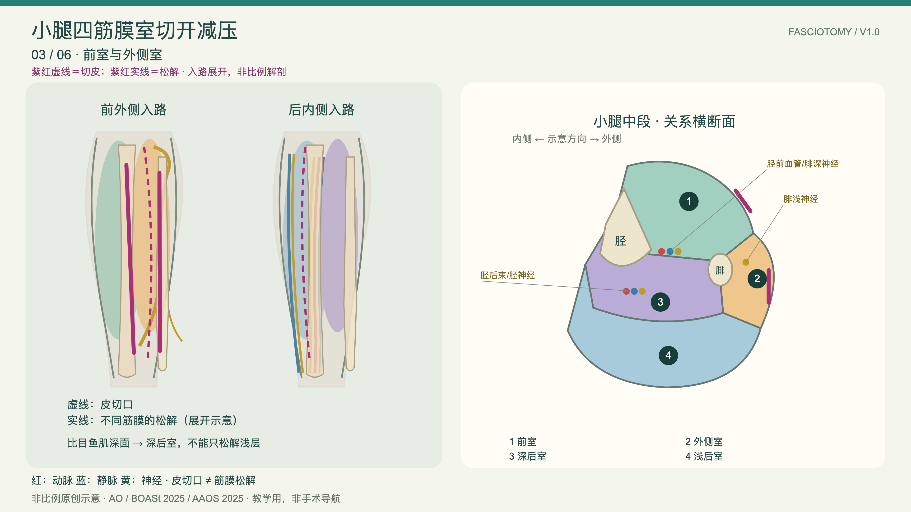

01
识别解剖
Read the anatomy
从骨骼、肌群和筋膜边界开始，先把空间关系讲清楚。
Start with bone, muscle and fascial borders to establish spatial relationships.
FASCIOTOMY / LAYERED TEACHING
把复杂解剖，讲成一条可以演示的教学路径。
Turn layered anatomy into a teachable path.
面向骨科教学的三维交互图谱，沿着“识别解剖 → 分步操作 → 神经血管风险 → 复盘讨论”推进课堂。A 3D teaching atlas for anatomy, procedural steps, neurovascular risks and classroom discussion.
A 3D teaching atlas for anatomy, procedural steps, neurovascular risks and classroom discussion.Use the same sequence in Chinese or English, in class or during an online demonstration.

A STRUCTURED PATH FOR TEACHING
先建立空间关系，再进入操作层次；每一步都能暂停、讲解和回看。
Build spatial relationships first, then move into procedural layers. Pause, explain and revisit each step.
从骨骼、肌群和筋膜边界开始，先把空间关系讲清楚。
Start with bone, muscle and fascial borders to establish spatial relationships.

按入路顺序展开皮切口、筋膜层次和四个筋膜室。
Walk through incision, fascial layers and all four compartments in sequence.

在同一张图上标出需要保护的神经、动脉和静脉。
Keep nerves, arteries and veins visible while explaining protection points.

回到横断面和临床问题，组织学生说出关键结构与边界。
Return to the cross-section and ask learners to explain key structures and limits.
BROWSE BY REGION
三个独立部位，共用同一条教学逻辑；每页都保留中英文、横断面和风险说明。
Three independent regions, one teaching logic. Each module includes bilingual steps, cross-sections and risk notes.
READY FOR THE CLASSROOM
从一张三维图开始，用四个问题组织课堂：看见了什么？下一步如何进入？哪些结构必须保护？这张图的边界在哪里？
Start with one 3D view and structure the lesson around four questions: what is visible, what comes next, what must be protected, and where are the limits of the model?
本系列针对成人创伤性急性筋膜室综合征。图形为原创二维关系示意与非比例三维分层，不能用于患者特异性测量、手术导航或替代临床判断。依据 AAOS 2025、BOASt 2025 与 AO 入路说明独立编制。
This series addresses adult traumatic acute compartment syndrome. The drawings are original relational schematics and non-proportional 3D layers; they are not for patient-specific measurement, surgical navigation or replacing clinical judgment. Compiled independently from AAOS 2025, BOASt 2025 and AO approaches.